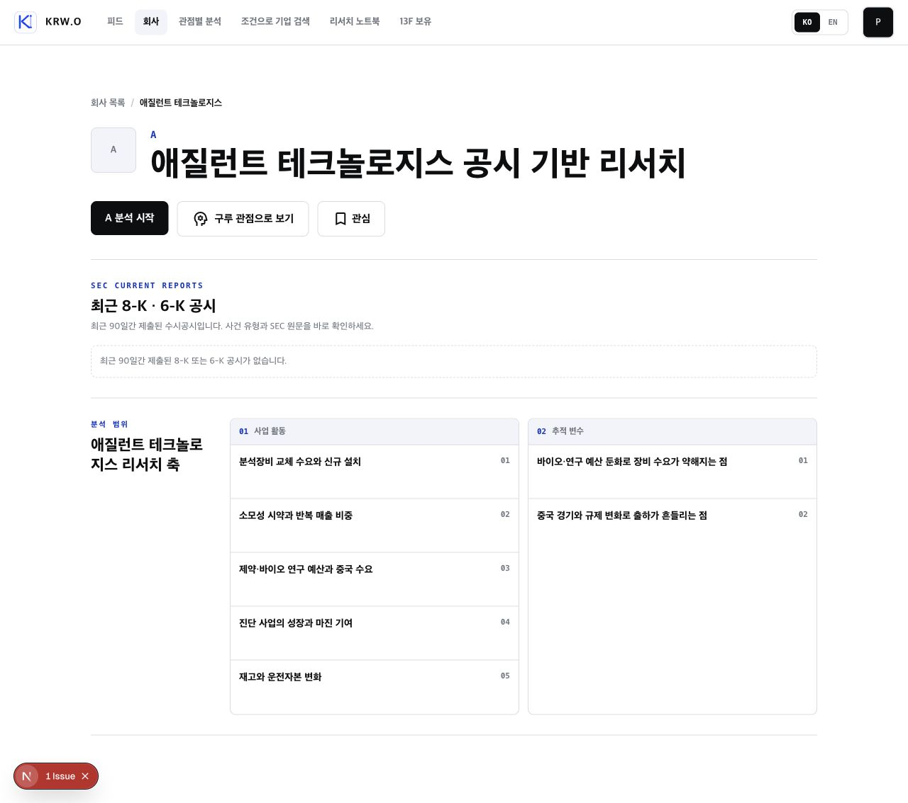
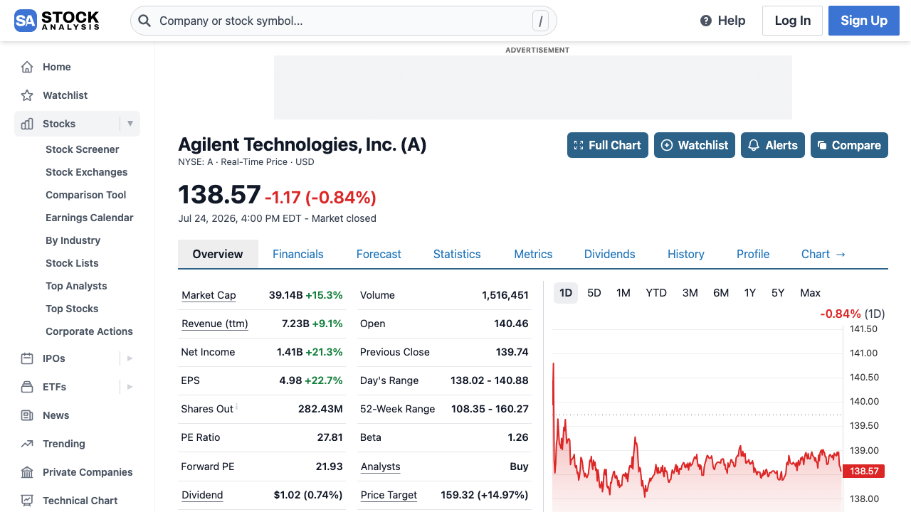

목록을 없애기보다, 스토리를 앞에 둔다
6~8컷이 회사 소개의 첫 번째 리서치 경험이 되고, 현재의 전체 축 목록은 캐러셀 아래에 작게 유지하세요. 긴 슬라이드는 몰입형 설명에 좋고, 목록은 원하는 항목을 곧바로 찾는 데 좋습니다. 둘의 역할이 다릅니다.
회사 소개 ──────── [ 회사 리서치 스토리 01 / 08 ] ← 좌우 스와이프 → 전체 리서치 축 사업 활동 · 추적 변수 (원하는 축으로 바로 진입)
Design improvement · Company story carousel
가능합니다. 단, 단순히 현재 목록을 카드로 잘라 넘기는 방식이 아니라 ‘이 회사를 이해하는 순서’를 한 장면씩 보여주는 회사 소개여야 합니다.

현재의 ‘사업 활동’ 5개와 ‘추적 변수’ 2개는 좋은 원본 데이터다. 다만 처음 보는 개인투자자에게는 목차처럼 보이기 때문에, 앞에 이해 순서를 주는 스토리 층을 추가하는 편이 좋다.
| 장면 | 한 장의 메시지 | 시각 소재 |
|---|---|---|
| 01 · 표지 | 분석장비와 소모성 시약으로 반복 수요를 쌓는 회사 | 실험실·분석 장비의 추상적 편집 이미지 |
| 02 · 축 1 | 장비 교체 수요와 신규 설치가 매출의 시작점 | 장비 설치·교체 흐름 다이어그램 |
| 03 · 축 2 | 소모성 시약은 반복 매출의 질을 보여줌 | 시약·소모품의 반복 루프 |
| 04 · 축 3 | 제약·바이오 연구 예산과 중국 수요를 함께 봐야 함 | 수요 지역·연구 예산의 연결 그래픽 |
| 05 · 축 4 | 진단 사업의 성장과 마진 기여 | 사업 믹스와 마진의 간단한 레이어 |
| 06 · 축 5 | 재고와 운전자본은 수요 변화를 먼저 비출 수 있음 | 재고 → 현금흐름 흐름도 |
| 07 · 리스크 | 연구 예산 둔화는 장비 수요를 약하게 만들 수 있음 | 주의 신호 1개와 짧은 설명 |
| 08 · 리스크 | 중국 경기·규제 변화는 출하를 흔들 수 있음 | 주의 신호 1개와 ‘이 축으로 리서치’ |
6~8컷이 회사 소개의 첫 번째 리서치 경험이 되고, 현재의 전체 축 목록은 캐러셀 아래에 작게 유지하세요. 긴 슬라이드는 몰입형 설명에 좋고, 목록은 원하는 항목을 곧바로 찾는 데 좋습니다. 둘의 역할이 다릅니다.
회사 소개 ──────── [ 회사 리서치 스토리 01 / 08 ] ← 좌우 스와이프 → 전체 리서치 축 사업 활동 · 추적 변수 (원하는 축으로 바로 진입)
모든 장을 단순 회사 로고 배경으로 만들면 광고처럼 보입니다. 한 장마다 하나의 이미지/도식과 1개의 핵심 문장만 쓰고, 작은 레이블과 01 / 08만 남기세요. 텍스트는 이미지에 구워 넣지 않고 UI 오버레이로 두어야 한국어·영어와 접근성을 함께 관리할 수 있습니다.
참고: Public의 모바일 종목 화면은 회사명·현재 상태·한 가지 핵심 시각물을 먼저 보여줍니다. 이 원리를 차트 대신 ‘사업을 이해하는 그림’으로 옮기면 됩니다.
왜: 가로 점 표시는 여러 페이지의 현재 위치를 알려주는 표준 패턴입니다. 화면마다 한 가지 핵심만 남기는 편이 긴 설명을 한꺼번에 읽히는 것보다 투자자가 이해하기 쉽습니다.
가능합니다. 현재 편집 콘텐츠는 이미지 2~8장을 받을 수 있고, 피드의 4컷 카드는 이미 스크롤 스냅 기반으로 좌우 이동합니다. 다만 현재 4컷은 고정된 샘플 구조라, 실제 구현 때는 ‘회사 스토리’ 데이터를 받아 6~8장을 렌더링하는 재사용형 캐러셀로 일반화하면 됩니다.
| 현재 | 바꿀 점 |
|---|---|
| 4장 고정 학습 카드 | 회사별 6~8장 스토리 데이터 |
| 범용 공시 교육 문구 | 회사 프로필의 사업 축·위험 변수 |
| 카드 단위 행동 | 마지막 장의 회사 리서치 진입 + 축 목록 유지 |

